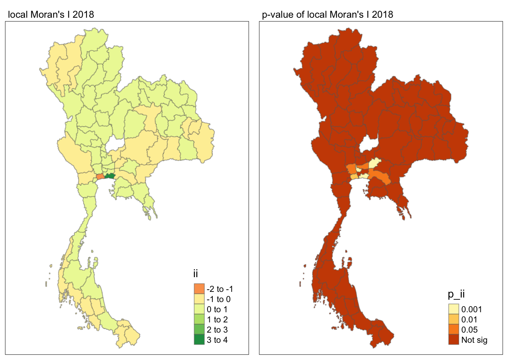

pacman::p_load(sf,spdep,tmap,tidyverse,dplyr,sfdep)Take-home_Ex02
Take home exe2
Setting the Analytical Tools
Getting the data into R Environment
Import shapefile into r environment
Thailand_Map <- st_read(dsn = "data/tha_adm_rtsd_itos_20210121_shp", layer = "tha_admbnda_adm1_rtsd_20220121" )Reading layer `tha_admbnda_adm1_rtsd_20220121' from data source
`/Users/liangyuhang/Downloads/Maaaaaaaaaark/IS415_g/Take-home_Ex/Take-home_Ex02/data/tha_adm_rtsd_itos_20210121_shp'
using driver `ESRI Shapefile'
Simple feature collection with 77 features and 16 fields
Geometry type: MULTIPOLYGON
Dimension: XY
Bounding box: xmin: 97.34336 ymin: 5.613038 xmax: 105.637 ymax: 20.46507
Geodetic CRS: WGS 84st_crs(Thailand_Map)Coordinate Reference System:
User input: WGS 84
wkt:
GEOGCRS["WGS 84",
DATUM["World Geodetic System 1984",
ELLIPSOID["WGS 84",6378137,298.257223563,
LENGTHUNIT["metre",1]]],
PRIMEM["Greenwich",0,
ANGLEUNIT["degree",0.0174532925199433]],
CS[ellipsoidal,2],
AXIS["latitude",north,
ORDER[1],
ANGLEUNIT["degree",0.0174532925199433]],
AXIS["longitude",east,
ORDER[2],
ANGLEUNIT["degree",0.0174532925199433]],
ID["EPSG",4326]]st_transform(Thailand_Map, crs = 32647)Simple feature collection with 77 features and 16 fields
Geometry type: MULTIPOLYGON
Dimension: XY
Bounding box: xmin: 325178.8 ymin: 620860.6 xmax: 1213656 ymax: 2263241
Projected CRS: WGS 84 / UTM zone 47N
First 10 features:
Shape_Leng Shape_Area ADM1_EN ADM1_TH ADM1_PCODE
1 2.417227 0.13133873 Bangkok กรุงเทพมหานคร TH10
2 1.695100 0.07926199 Samut Prakan สมุทรปราการ TH11
3 1.251111 0.05323766 Nonthaburi นนทบุรี TH12
4 1.884945 0.12698345 Pathum Thani ปทุมธานี TH13
5 3.041716 0.21393797 Phra Nakhon Si Ayutthaya พระนครศรีอยุธยา TH14
6 1.739908 0.07920961 Ang Thong อ่างทอง TH15
7 5.693342 0.54578838 Lop Buri ลพบุรี TH16
8 1.778326 0.06872655 Sing Buri สิงห์บุรี TH17
9 2.896316 0.20907828 Chai Nat ชัยนาท TH18
10 4.766446 0.29208711 Saraburi สระบุรี TH19
ADM1_REF ADM1ALT1EN ADM1ALT2EN ADM1ALT1TH ADM1ALT2TH ADM0_EN ADM0_TH
1 <NA> <NA> <NA> <NA> <NA> Thailand ประเทศไทย
2 <NA> <NA> <NA> <NA> <NA> Thailand ประเทศไทย
3 <NA> <NA> <NA> <NA> <NA> Thailand ประเทศไทย
4 <NA> <NA> <NA> <NA> <NA> Thailand ประเทศไทย
5 <NA> <NA> <NA> <NA> <NA> Thailand ประเทศไทย
6 <NA> <NA> <NA> <NA> <NA> Thailand ประเทศไทย
7 <NA> <NA> <NA> <NA> <NA> Thailand ประเทศไทย
8 <NA> <NA> <NA> <NA> <NA> Thailand ประเทศไทย
9 <NA> <NA> <NA> <NA> <NA> Thailand ประเทศไทย
10 <NA> <NA> <NA> <NA> <NA> Thailand ประเทศไทย
ADM0_PCODE date validOn validTo geometry
1 TH 2019-02-18 2022-01-22 <NA> MULTIPOLYGON (((674339.8 15...
2 TH 2019-02-18 2022-01-22 <NA> MULTIPOLYGON (((687139.8 15...
3 TH 2019-02-18 2022-01-22 <NA> MULTIPOLYGON (((644817.9 15...
4 TH 2019-02-18 2022-01-22 <NA> MULTIPOLYGON (((704086 1575...
5 TH 2019-02-18 2022-01-22 <NA> MULTIPOLYGON (((662941.6 16...
6 TH 2019-02-18 2022-01-22 <NA> MULTIPOLYGON (((643472.8 16...
7 TH 2019-02-18 2022-01-22 <NA> MULTIPOLYGON (((751293.3 17...
8 TH 2019-02-18 2022-01-22 <NA> MULTIPOLYGON (((647136.1 16...
9 TH 2019-02-18 2022-01-22 <NA> MULTIPOLYGON (((620165.4 17...
10 TH 2019-02-18 2022-01-22 <NA> MULTIPOLYGON (((757935.1 16...Import. csv file into r environment
Thailand <- read_csv("data/archive/thai_drug_offenses_2017_2022.csv")Rows: 7392 Columns: 5
── Column specification ────────────────────────────────────────────────────────
Delimiter: ","
chr (3): types_of_drug_offenses, province_th, province_en
dbl (2): fiscal_year, no_cases
ℹ Use `spec()` to retrieve the full column specification for this data.
ℹ Specify the column types or set `show_col_types = FALSE` to quiet this message.data
left join the data
Thailand = Thailand %>%
pivot_wider(names_from = types_of_drug_offenses, values_from = no_cases) %>%
mutate(`Total` = rowSums(.[4:19]))Thailand_Map_Drug <- left_join(Thailand_Map, Thailand, by = c("ADM1_EN" = "province_en"))%>%
dplyr::select(1:3, 17,19:36)flit the drug abuse data by year
Drug2017 = Thailand_Map_Drug %>%
filter(fiscal_year == "2017")
Drug2018 = Thailand_Map_Drug %>%
filter(fiscal_year == "2018")
Drug2019 = Thailand_Map_Drug %>%
filter(fiscal_year == "2019")
Drug2020 = Thailand_Map_Drug %>%
filter(fiscal_year == "2020")
Drug2021 = Thailand_Map_Drug %>%
filter(fiscal_year == "2021")
Drug2022 = Thailand_Map_Drug %>%
filter(fiscal_year == "2022")Visualising the data
quantile2017 = tm_shape(Drug2017) +
tm_fill(style = "quantile") +
tm_borders(alpha = 1)
quantile2018 = tm_shape(Drug2018) +
tm_fill(style = "quantile") +
tm_borders(alpha = 1)
quantile2019 = tm_shape(Drug2019) +
tm_fill(style = "quantile") +
tm_borders(alpha = 1)
quantile2020 = tm_shape(Drug2020) +
tm_fill(style = "quantile") +
tm_borders(alpha = 1)
quantile2021 = tm_shape(Drug2021) +
tm_fill(style = "quantile") +
tm_borders(alpha = 1)
quantile2022 = tm_shape(Drug2022) +
tm_fill(style = "quantile") +
tm_borders(alpha = 1)
tmap_arrange(quantile2017,quantile2018,quantile2019,quantile2020,quantile2021,quantile2022,ncol = 2)Global Measures of Spatial Autocorrelation
Computing Contiguity Spatial Weights
wm_q2017 = Drug2017 %>%
mutate(nb = st_contiguity(geometry),
.before = 1)Warning: There were 2 warnings in `stopifnot()`.
The first warning was:
ℹ In argument: `nb = st_contiguity(geometry)`.
Caused by warning in `spdep::poly2nb()`:
! some observations have no neighbours;
if this seems unexpected, try increasing the snap argument.
ℹ Run `dplyr::last_dplyr_warnings()` to see the 1 remaining warning.str(wm_q2017)Classes 'sf' and 'data.frame': 75 obs. of 23 variables:
$ nb :List of 75
..$ : int 2 3 4 14 57 58
..$ : int 1 14
..$ : int 1 4 5 57
..$ : int 1 3 5 9 14 16
..$ : int 3 4 6 9 56 57
..$ : int 5 7 56
..$ : int 6 8 46 56
..$ : int 7 46 47 56
..$ : int 4 5 16 18
..$ : int 11 12 14
..$ : int 10 12
..$ : int 10 11 13 14 17
..$ : int 12
..$ : int 1 2 4 10 12 15 16 17
..$ : int 14 16 17 18
..$ : int 4 9 14 15 18
..$ : int 12 14 15 18 19
..$ : int 9 15 16 17 19 24 27
..$ : int 17 18 20 27 31
..$ : int 19 21 31 32
..$ : int 20 22 23 32
..$ : int 21 23 25
..$ : int 21 22 25 32 36
..$ : int 18 27 53
..$ : int 22 23 36
..$ : int 27 28 29
..$ : int 18 19 24 26 28 29 31 33 53
..$ : int 26 27 29 30 33 34
..$ : int 26 27 28 30 51 53
..$ : int 28 29 34
..$ : int 19 20 27 32 33
..$ : int 20 21 23 31 33 36
..$ : int 27 28 31 32 34 36
..$ : int 28 30 33 35 36
..$ : int 34 36
..$ : int 23 25 32 33 34 35
..$ : int 38 39 44 45 49
..$ : int 37 39 49
..$ : int 37 38 41 43 44 49 50
..$ : int 41 42 50 51
..$ : int 39 40 42 43 50
..$ : int 40 41 43
..$ : int 39 41 42 44
..$ : int 37 39 43
..$ : int 37 49
..$ : int 7 8 47 48 49 52 53
..$ : int 8 46 49 55 56
..$ : int 46 49 50 51 52
..$ : int 37 38 39 45 46 47 48 50 55
..$ : int 39 40 41 48 49 51
..$ : int 29 40 48 50 52 53
..$ : int 46 48 51 53
..$ : int 24 27 29 46 51 52
..$ : int 55 57 58 59 60
..$ : int 47 49 54 56 57
..$ : int 5 6 7 8 47 55 57
..$ : int 1 3 5 54 55 56 58
..$ : int 1 54 57 59
..$ : int 54 58 60
..$ : int 54 59 61
..$ : int 60 68
..$ : int 63 66 69 71 72
..$ : int 62 64 66 71
..$ : int 63 66 67
..$ : int 0
..$ : int 62 63 64 67 68
..$ : int 64 66 68
..$ : int 61 66 67
..$ : int 62 70 72 73 74
..$ : int 69 71 72
..$ : int 62 63 70 72
..$ : int 62 69 70 71
..$ : int 69 74 75
..$ : int 69 73 75
..$ : int 73 74
..- attr(*, "class")= chr [1:2] "nb" "list"
..- attr(*, "region.id")= chr [1:75] "1" "2" "3" "4" ...
..- attr(*, "call")= language spdep::poly2nb(pl = geometry, queen = queen)
..- attr(*, "type")= chr "queen"
..- attr(*, "snap")= num 9e-08
..- attr(*, "sym")= logi TRUE
..- attr(*, "ncomp")=List of 2
.. ..$ nc : num 2
.. ..$ comp.id: num [1:75] 1 1 1 1 1 1 1 1 1 1 ...
$ Shape_Leng : num 2.42 1.7 1.25 1.88 3.04 ...
$ Shape_Area : num 0.1313 0.0793 0.0532 0.127 0.2139 ...
$ ADM1_EN : chr "Bangkok" "Samut Prakan" "Nonthaburi" "Pathum Thani" ...
$ fiscal_year : num 2017 2017 2017 2017 2017 ...
$ drug_use_cases : num 11871 820 553 450 378 ...
$ suspects_in_drug_use_cases : num 12371 828 556 475 410 ...
$ possession_cases : num 9224 3348 1808 1694 1267 ...
$ suspects_in_possession_cases : num 9997 3402 1858 1772 1394 ...
$ possession_with_intent_to_distribute_cases : num 6374 1723 1067 1346 1071 ...
$ suspects_in_possession_with_intent_to_distribute_cases: num 7129 1834 1192 1527 1311 ...
$ trafficking_cases : num 950 201 118 83 164 51 41 210 58 332 ...
$ suspects_in_trafficking_cases : num 1084 221 147 92 193 ...
$ production_cases : num 316 22 11 62 8 8 5 5 10 12 ...
$ suspects_in_production_cases : num 709 26 17 96 9 10 5 5 10 12 ...
$ import_cases : num 0 0 1 0 0 0 0 0 1 1 ...
$ suspects_in_import_cases : num 0 1 1 0 0 0 0 0 2 1 ...
$ export_cases : num 2 0 0 0 0 0 0 0 0 1 ...
$ suspects_in_export_cases : num 2 0 0 0 0 0 0 0 0 2 ...
$ conspiracy_cases : num 10 5 4 4 4 1 1 2 0 3 ...
$ suspects_in_conspiracy_cases : num 28 21 15 15 12 1 2 2 0 4 ...
$ Total : num 60067 12452 7348 7616 6221 ...
$ geometry :sfc_MULTIPOLYGON of length 75; first list element: List of 1
..$ :List of 1
.. ..$ : num [1:8501, 1:2] 101 101 101 101 101 ...
..- attr(*, "class")= chr [1:3] "XY" "MULTIPOLYGON" "sfg"
- attr(*, "sf_column")= chr "geometry"
- attr(*, "agr")= Factor w/ 3 levels "constant","aggregate",..: NA NA NA NA NA NA NA NA NA NA ...
..- attr(*, "names")= chr [1:22] "nb" "Shape_Leng" "Shape_Area" "ADM1_EN" ...Drug2017_buffered <- st_buffer(Drug2017, dist = 1000)
wm_q2017 <- Drug2017_buffered %>%
mutate(nb = st_contiguity(geometry),
wt = st_weights(nb,
style = "W"),
.before = 1) Drug2018_buffered <- st_buffer(Drug2018, dist = 1000)
wm_q2018 <- Drug2018_buffered %>%
mutate(nb = st_contiguity(geometry),
wt = st_weights(nb,
style = "W"),
.before = 1) Drug2019_buffered <- st_buffer(Drug2019, dist = 1000)
wm_q2019 <- Drug2019_buffered %>%
mutate(nb = st_contiguity(geometry),
wt = st_weights(nb,
style = "W"),
.before = 1) Drug2020_buffered <- st_buffer(Drug2020, dist = 1000)
wm_q2020 <- Drug2020_buffered %>%
mutate(nb = st_contiguity(geometry),
wt = st_weights(nb,
style = "W"),
.before = 1) Drug2021_buffered <- st_buffer(Drug2021, dist = 1000)
wm_q2021 <- Drug2021_buffered %>%
mutate(nb = st_contiguity(geometry),
wt = st_weights(nb,
style = "W"),
.before = 1) Drug2022_buffered <- st_buffer(Drug2022, dist = 1000)
wm_q2022 <- Drug2022_buffered %>%
mutate(nb = st_contiguity(geometry),
wt = st_weights(nb,
style = "W"),
.before = 1) Global Measures of Spatial Autocorrelation: Moran’s I
Maron’s I test
2017
moranI2017 <- global_moran(wm_q2017$Total,
wm_q2017$nb,
wm_q2017$wt)
glimpse(moranI2017)List of 2
$ I: num 0.123
$ K: num 30.6global_moran_test(wm_q2017$Total,
wm_q2017$nb,
wm_q2017$wt)
Moran I test under randomisation
data: x
weights: listw
Moran I statistic standard deviate = 2.1337, p-value = 0.01643
alternative hypothesis: greater
sample estimates:
Moran I statistic Expectation Variance
0.123050961 -0.013513514 0.004096373 The positive Moran’s I value indicates a moderate degree of clustering of drug cases. The p-value (0.01643)meaning there is a significant positive autocorrelation of drug cases in 2017.
moranI2018 <- global_moran(wm_q2018$Total,
wm_q2018$nb,
wm_q2018$wt)
glimpse(moranI2018)List of 2
$ I: num 0.105
$ K: num 29.7global_moran_test(wm_q2018$Total,
wm_q2018$nb,
wm_q2018$wt)
Moran I test under randomisation
data: x
weights: listw
Moran I statistic standard deviate = 1.8388, p-value = 0.03297
alternative hypothesis: greater
sample estimates:
Moran I statistic Expectation Variance
0.105375571 -0.013513514 0.004180372 Moran’s I slightly decreases to 0.105375571, with a p-value of 0.004180372 Though the value is lower than in 2017, there is still significant positive spatial autocorrelation.
2019
moranI2019 <- global_moran(wm_q2019$Total,
wm_q2019$nb,
wm_q2019$wt)
glimpse(moranI2019)List of 2
$ I: num 0.146
$ K: num 18.4global_moran_test(wm_q2019$Total,
wm_q2019$nb,
wm_q2019$wt)
Moran I test under randomisation
data: x
weights: listw
Moran I statistic standard deviate = 2.2016, p-value = 0.01385
alternative hypothesis: greater
sample estimates:
Moran I statistic Expectation Variance
0.146257955 -0.013513514 0.005266338 The clustering continues, though slightly weaker than in 2017. The p-value (0.03297) indicates that the result is still statistically significant, implying that similar values are still more likely to be found near each other.
2020
moranI2020 <- global_moran(wm_q2020$Total,
wm_q2020$nb,
wm_q2020$wt)
glimpse(moranI2020)List of 2
$ I: num 0.126
$ K: num 12global_moran_test(wm_q2020$Total,
wm_q2020$nb,
wm_q2020$wt)
Moran I test under randomisation
data: x
weights: listw
Moran I statistic standard deviate = 1.8235, p-value = 0.03412
alternative hypothesis: greater
sample estimates:
Moran I statistic Expectation Variance
0.126289267 -0.013513514 0.005877973 The clustering strength decreased slightly compared to 2019 but remains significant. The p-value shows that the clustering is statistically significant.
2021
moranI2021 <- global_moran(wm_q2021$Total,
wm_q2021$nb,
wm_q2021$wt)
glimpse(moranI2021)List of 2
$ I: num 0.211
$ K: num 5.37global_moran_test(wm_q2021$Total,
wm_q2021$nb,
wm_q2021$wt)
Moran I test under randomisation
data: x
weights: listw
Moran I statistic standard deviate = 2.7845, p-value = 0.002681
alternative hypothesis: greater
sample estimates:
Moran I statistic Expectation Variance
0.211194210 -0.013513514 0.006512565 This year shows a notable increase in clustering compared to previous years, indicating a higher concentration of drug cases in certain areas. The p-value indicates a very strong statistical significance.
2022
moranI2022 <- global_moran(wm_q2022$Total,
wm_q2022$nb,
wm_q2022$wt)
glimpse(moranI2022)List of 2
$ I: num 0.241
$ K: num 3.26global_moran_test(wm_q2022$Total,
wm_q2022$nb,
wm_q2022$wt)
Moran I test under randomisation
data: x
weights: listw
Moran I statistic standard deviate = 3.1074, p-value = 0.0009436
alternative hypothesis: greater
sample estimates:
Moran I statistic Expectation Variance
0.241120788 -0.013513514 0.006714704 The highest Moran’s I value recorded, indicating even stronger clustering of drug cases compared to all previous years. The extremely low p-value confirms that this result is highly statistically significant.
Over the years from 2017 to 2022, the strength of spatial autocorrelation in drug cases has generally increased, indicating a trend toward greater clustering. The significant p-values across the years suggest that similar drug case counts are consistently found in geographically close areas. The increasing Moran’s I values could suggest that the distribution of drug cases is becoming more concentrated in specific regions over time.
Performing Global Moran’I permutation test
2017
set.seed(1234)
global_moran_perm(wm_q2017$Total,
wm_q2017$nb,
wm_q2017$wt,
nsim = 99)
Monte-Carlo simulation of Moran I
data: x
weights: listw
number of simulations + 1: 100
statistic = 0.12305, observed rank = 95, p-value = 0.1
alternative hypothesis: two.sided2018
set.seed(1234)
global_moran_perm(wm_q2018$Total,
wm_q2018$nb,
wm_q2018$wt,
nsim = 99)
Monte-Carlo simulation of Moran I
data: x
weights: listw
number of simulations + 1: 100
statistic = 0.10538, observed rank = 92, p-value = 0.16
alternative hypothesis: two.sided2019
set.seed(1234)
global_moran_perm(wm_q2019$Total,
wm_q2019$nb,
wm_q2019$wt,
nsim = 99)
Monte-Carlo simulation of Moran I
data: x
weights: listw
number of simulations + 1: 100
statistic = 0.14626, observed rank = 95, p-value = 0.1
alternative hypothesis: two.sided2020
set.seed(1234)
global_moran_perm(wm_q2020$Total,
wm_q2020$nb,
wm_q2020$wt,
nsim = 99)
Monte-Carlo simulation of Moran I
data: x
weights: listw
number of simulations + 1: 100
statistic = 0.12629, observed rank = 94, p-value = 0.12
alternative hypothesis: two.sided2021
set.seed(1234)
global_moran_perm(wm_q2021$Total,
wm_q2021$nb,
wm_q2021$wt,
nsim = 99)
Monte-Carlo simulation of Moran I
data: x
weights: listw
number of simulations + 1: 100
statistic = 0.21119, observed rank = 99, p-value = 0.02
alternative hypothesis: two.sided2022
set.seed(1234)
global_moran_perm(wm_q2022$Total,
wm_q2022$nb,
wm_q2022$wt,
nsim = 99)
Monte-Carlo simulation of Moran I
data: x
weights: listw
number of simulations + 1: 100
statistic = 0.24112, observed rank = 100, p-value < 2.2e-16
alternative hypothesis: two.sidedChange in Moran’s I Statistic:
From 2017 to 2022, the Moran’s I statistic shows an overall increasing trend, rising from 0.12305 to 0.24112. This suggests a growing spatial clustering of drug cases over this period. Change in p-values:
From 2017 to 2020, the p-values are relatively high (greater than 0.05), indicating insufficient evidence to suggest significant spatial autocorrelation of drug cases. However, in 2021 and 2022, the p-values notably decrease, especially in 2022, where the p-value is less than 0.05, indicating significant spatial autocorrelation in drug cases during these years. Observed Ranks:
The observed ranks are consistently around 90 to 100 each year, with 2022 reaching a rank of 100, indicating that the Moran’s I statistic for that year performed best among all simulations, showcasing the strongest spatial clustering.
orr2017)
Lisa Map
Compute Moran’s I correlogram
lisa2017 <- wm_q2017 %>%
mutate(local_moran = local_moran(
Drug2017$Total, nb, wt, nsim = 99),
.before = 1) %>%
unnest(local_moran)lisa2018 <- wm_q2018 %>%
mutate(local_moran = local_moran(
Drug2018$Total, nb, wt, nsim = 99),
.before = 1) %>%
unnest(local_moran)lisa2019 <- wm_q2019 %>%
mutate(local_moran = local_moran(
Drug2019$Total, nb, wt, nsim = 99),
.before = 1) %>%
unnest(local_moran)lisa2020 <- wm_q2020 %>%
mutate(local_moran = local_moran(
Drug2020$Total, nb, wt, nsim = 99),
.before = 1) %>%
unnest(local_moran)lisa2021 <- wm_q2021 %>%
mutate(local_moran = local_moran(
Drug2021$Total, nb, wt, nsim = 99),
.before = 1) %>%
unnest(local_moran)lisa2022 <- wm_q2022 %>%
mutate(local_moran = local_moran(
Drug2022$Total, nb, wt, nsim = 99),
.before = 1) %>%
unnest(local_moran)Visualising local Moran’s I and p-value
2017
tmap_mode("plot")tmap mode set to plottingmap1 <- tm_shape(lisa2017) +
tm_fill("ii") +
tm_borders(alpha = 0.5) +
tm_view(set.zoom.limits = c(6,8)) +
tm_layout(main.title = "local Moran's I 2017",
main.title.size = 0.8)
map2 <- tm_shape(lisa2017) +
tm_fill("p_ii",
breaks = c(0, 0.001, 0.01, 0.05, 1),
labels = c("0.001", "0.01", "0.05", "Not sig")) +
tm_borders(alpha = 0.5) +
tm_layout(main.title = "p-value of local Moran's I 2017",
main.title.size = 0.8)
tmap_arrange(map1, map2, ncol = 2)Variable(s) "ii" contains positive and negative values, so midpoint is set to 0. Set midpoint = NA to show the full spectrum of the color palette.2018
tmap_mode("plot")tmap mode set to plottingmap1 <- tm_shape(lisa2018) +
tm_fill("ii") +
tm_borders(alpha = 0.5) +
tm_view(set.zoom.limits = c(6,8)) +
tm_layout(main.title = "local Moran's I 2018",
main.title.size = 0.8)
map2 <- tm_shape(lisa2018) +
tm_fill("p_ii",
breaks = c(0, 0.001, 0.01, 0.05, 1),
labels = c("0.001", "0.01", "0.05", "Not sig")) +
tm_borders(alpha = 0.5) +
tm_layout(main.title = "p-value of local Moran's I 2018",
main.title.size = 0.8)
tmap_arrange(map1, map2, ncol = 2)Variable(s) "ii" contains positive and negative values, so midpoint is set to 0. Set midpoint = NA to show the full spectrum of the color palette.
2019
tmap_mode("plot")tmap mode set to plottingmap1 <- tm_shape(lisa2019) +
tm_fill("ii") +
tm_borders(alpha = 0.5) +
tm_view(set.zoom.limits = c(6,8)) +
tm_layout(main.title = "local Moran's I 2019",
main.title.size = 0.8)
map2 <- tm_shape(lisa2019) +
tm_fill("p_ii",
breaks = c(0, 0.001, 0.01, 0.05, 1),
labels = c("0.001", "0.01", "0.05", "Not sig")) +
tm_borders(alpha = 0.5) +
tm_layout(main.title = "p-value of local Moran's I 2019",
main.title.size = 0.8)
tmap_arrange(map1, map2, ncol = 2)Variable(s) "ii" contains positive and negative values, so midpoint is set to 0. Set midpoint = NA to show the full spectrum of the color palette.
2020
tmap_mode("plot")tmap mode set to plottingmap1 <- tm_shape(lisa2020) +
tm_fill("ii") +
tm_borders(alpha = 0.5) +
tm_view(set.zoom.limits = c(6,8)) +
tm_layout(main.title = "local Moran's I 2020",
main.title.size = 0.8)
map2 <- tm_shape(lisa2020) +
tm_fill("p_ii",
breaks = c(0, 0.001, 0.01, 0.05, 1),
labels = c("0.001", "0.01", "0.05", "Not sig")) +
tm_borders(alpha = 0.5) +
tm_layout(main.title = "p-value of local Moran's I 2020",
main.title.size = 0.8)
tmap_arrange(map1, map2, ncol = 2)Variable(s) "ii" contains positive and negative values, so midpoint is set to 0. Set midpoint = NA to show the full spectrum of the color palette.2021
tmap_mode("plot")tmap mode set to plottingmap1 <- tm_shape(lisa2021) +
tm_fill("ii") +
tm_borders(alpha = 0.5) +
tm_view(set.zoom.limits = c(6,8)) +
tm_layout(main.title = "local Moran's I 2021",
main.title.size = 0.8)
map2 <- tm_shape(lisa2021) +
tm_fill("p_ii",
breaks = c(0, 0.001, 0.01, 0.05, 1),
labels = c("0.001", "0.01", "0.05", "Not sig")) +
tm_borders(alpha = 0.5) +
tm_layout(main.title = "p-value of local Moran's I 2021",
main.title.size = 0.8)
tmap_arrange(map1, map2, ncol = 2)Variable(s) "ii" contains positive and negative values, so midpoint is set to 0. Set midpoint = NA to show the full spectrum of the color palette.
2022
tmap_mode("plot")tmap mode set to plottingmap1 <- tm_shape(lisa2022) +
tm_fill("ii") +
tm_borders(alpha = 0.5) +
tm_view(set.zoom.limits = c(6,8)) +
tm_layout(main.title = "local Moran's I 2022",
main.title.size = 0.8)
map2 <- tm_shape(lisa2022) +
tm_fill("p_ii",
breaks = c(0, 0.001, 0.01, 0.05, 1),
labels = c("0.001", "0.01", "0.05", "Not sig")) +
tm_borders(alpha = 0.5) +
tm_layout(main.title = "p-value of local Moran's I 2022",
main.title.size = 0.8)
tmap_arrange(map1, map2, ncol = 2)Variable(s) "ii" contains positive and negative values, so midpoint is set to 0. Set midpoint = NA to show the full spectrum of the color palette.
Plotting LISA map
lisa_sig2017 <- lisa2017 %>%
filter(p_ii_sim < 0.05)
tmap_mode("plot")tmap mode set to plottingtm_shape(lisa2017) +
tm_polygons() +
tm_borders(alpha = 0.5) +
tm_shape(lisa_sig2017) +
tm_fill("mean") +
tm_borders(alpha = 0.4)Warning: One tm layer group has duplicated layer types, which are omitted. To
draw multiple layers of the same type, use multiple layer groups (i.e. specify
tm_shape prior to each of them).lisa_sig2018 <- lisa2018 %>%
filter(p_ii_sim < 0.05)
tmap_mode("plot")tmap mode set to plottingtm_shape(lisa2018) +
tm_polygons() +
tm_borders(alpha = 0.5) +
tm_shape(lisa_sig2018) +
tm_fill("mean") +
tm_borders(alpha = 0.4)Warning: One tm layer group has duplicated layer types, which are omitted. To
draw multiple layers of the same type, use multiple layer groups (i.e. specify
tm_shape prior to each of them).
lisa_sig2019 <- lisa2019 %>%
filter(p_ii_sim < 0.05)
tmap_mode("plot")tmap mode set to plottingtm_shape(lisa2019) +
tm_polygons() +
tm_borders(alpha = 0.5) +
tm_shape(lisa_sig2019) +
tm_fill("mean") +
tm_borders(alpha = 0.4)Warning: One tm layer group has duplicated layer types, which are omitted. To
draw multiple layers of the same type, use multiple layer groups (i.e. specify
tm_shape prior to each of them).lisa_sig2020 <- lisa2020 %>%
filter(p_ii_sim < 0.05)
tmap_mode("plot")tmap mode set to plottingtm_shape(lisa2020) +
tm_polygons() +
tm_borders(alpha = 0.5) +
tm_shape(lisa_sig2020) +
tm_fill("mean") +
tm_borders(alpha = 0.4)Warning: One tm layer group has duplicated layer types, which are omitted. To
draw multiple layers of the same type, use multiple layer groups (i.e. specify
tm_shape prior to each of them).lisa_sig2021 <- lisa2021 %>%
filter(p_ii_sim < 0.05)
tmap_mode("plot")tmap mode set to plottingtm_shape(lisa2021) +
tm_polygons() +
tm_borders(alpha = 0.5) +
tm_shape(lisa_sig2021) +
tm_fill("mean") +
tm_borders(alpha = 0.4)Warning: One tm layer group has duplicated layer types, which are omitted. To
draw multiple layers of the same type, use multiple layer groups (i.e. specify
tm_shape prior to each of them).
lisa_sig2022 <- lisa2022 %>%
filter(p_ii_sim < 0.05)
tmap_mode("plot")tmap mode set to plottingtm_shape(lisa2022) +
tm_polygons() +
tm_borders(alpha = 0.5) +
tm_shape(lisa_sig2022) +
tm_fill("mean") +
tm_borders(alpha = 0.4)Warning: One tm layer group has duplicated layer types, which are omitted. To
draw multiple layers of the same type, use multiple layer groups (i.e. specify
tm_shape prior to each of them).Hot Spot and Cold Spot Area Analysis
2017
wm_idw2017 <- Drug2017 %>%
mutate(nb = include_self(
st_contiguity(geometry)),
wts = st_inverse_distance(nb,
geometry,
scale = 1,
alpha = 1),
.before = 1)! Polygon provided. Using point on surface.Warning: There were 3 warnings in `stopifnot()`.
The first warning was:
ℹ In argument: `nb = include_self(st_contiguity(geometry))`.
Caused by warning in `spdep::poly2nb()`:
! some observations have no neighbours;
if this seems unexpected, try increasing the snap argument.
ℹ Run `dplyr::last_dplyr_warnings()` to see the 2 remaining warnings.2018
wm_idw2018 <- Drug2018 %>%
mutate(nb = include_self(
st_contiguity(geometry)),
wts = st_inverse_distance(nb,
geometry,
scale = 1,
alpha = 1),
.before = 1)! Polygon provided. Using point on surface.Warning: There were 3 warnings in `stopifnot()`.
The first warning was:
ℹ In argument: `nb = include_self(st_contiguity(geometry))`.
Caused by warning in `spdep::poly2nb()`:
! some observations have no neighbours;
if this seems unexpected, try increasing the snap argument.
ℹ Run `dplyr::last_dplyr_warnings()` to see the 2 remaining warnings.2019
wm_idw2019 <- Drug2019 %>%
mutate(nb = include_self(
st_contiguity(geometry)),
wts = st_inverse_distance(nb,
geometry,
scale = 1,
alpha = 1),
.before = 1)! Polygon provided. Using point on surface.Warning: There were 3 warnings in `stopifnot()`.
The first warning was:
ℹ In argument: `nb = include_self(st_contiguity(geometry))`.
Caused by warning in `spdep::poly2nb()`:
! some observations have no neighbours;
if this seems unexpected, try increasing the snap argument.
ℹ Run `dplyr::last_dplyr_warnings()` to see the 2 remaining warnings.2020
wm_idw2020 <- Drug2020 %>%
mutate(nb = include_self(
st_contiguity(geometry)),
wts = st_inverse_distance(nb,
geometry,
scale = 1,
alpha = 1),
.before = 1)! Polygon provided. Using point on surface.Warning: There were 3 warnings in `stopifnot()`.
The first warning was:
ℹ In argument: `nb = include_self(st_contiguity(geometry))`.
Caused by warning in `spdep::poly2nb()`:
! some observations have no neighbours;
if this seems unexpected, try increasing the snap argument.
ℹ Run `dplyr::last_dplyr_warnings()` to see the 2 remaining warnings.2021
wm_idw2021 <- Drug2021 %>%
mutate(nb = include_self(
st_contiguity(geometry)),
wts = st_inverse_distance(nb,
geometry,
scale = 1,
alpha = 1),
.before = 1)! Polygon provided. Using point on surface.Warning: There were 3 warnings in `stopifnot()`.
The first warning was:
ℹ In argument: `nb = include_self(st_contiguity(geometry))`.
Caused by warning in `spdep::poly2nb()`:
! some observations have no neighbours;
if this seems unexpected, try increasing the snap argument.
ℹ Run `dplyr::last_dplyr_warnings()` to see the 2 remaining warnings.2022
wm_idw2022 <- Drug2022 %>%
mutate(nb = include_self(
st_contiguity(geometry)),
wts = st_inverse_distance(nb,
geometry,
scale = 1,
alpha = 1),
.before = 1)! Polygon provided. Using point on surface.Warning: There were 3 warnings in `stopifnot()`.
The first warning was:
ℹ In argument: `nb = include_self(st_contiguity(geometry))`.
Caused by warning in `spdep::poly2nb()`:
! some observations have no neighbours;
if this seems unexpected, try increasing the snap argument.
ℹ Run `dplyr::last_dplyr_warnings()` to see the 2 remaining warnings.Computing local Gi* statistics
HCSA2017 <- wm_idw2017 %>%
mutate(local_Gi = local_gstar_perm(
Total, nb, wts, nsim = 99),
.before = 1) %>%
unnest(local_Gi)
HCSA2017Simple feature collection with 75 features and 33 fields
Geometry type: MULTIPOLYGON
Dimension: XY
Bounding box: xmin: 97.34336 ymin: 5.613038 xmax: 105.637 ymax: 20.46507
Geodetic CRS: WGS 84
# A tibble: 75 × 34
gi_star cluster e_gi var_gi std_dev p_value p_sim p_folded_sim skewness
<dbl> <fct> <dbl> <dbl> <dbl> <dbl> <dbl> <dbl> <dbl>
1 0.485 High 0.00183 3.07e-7 1.27 2.03e-1 0.3 0.15 0.634
2 6.82 High 0.000980 9.05e-7 5.42 6.00e-8 0.04 0.02 3.36
3 3.48 High 0.00151 6.58e-7 3.45 5.59e-4 0.08 0.04 2.12
4 2.86 High 0.00170 8.19e-7 2.43 1.50e-2 0.12 0.06 1.81
5 -0.533 Low 0.00162 5.05e-7 -0.416 6.78e-1 0.82 0.41 2.22
6 -0.590 Low 0.00117 7.52e-7 -0.493 6.22e-1 0.6 0.3 3.54
7 -1.07 Low 0.00118 5.24e-7 -0.956 3.39e-1 0.06 0.03 2.65
8 -1.09 Low 0.00100 2.66e-7 -1.15 2.51e-1 0.04 0.02 2.47
9 -0.167 Low 0.000770 1.59e-7 -0.0982 9.22e-1 0.88 0.44 2.22
10 0.736 High 0.000742 3.39e-7 0.581 5.61e-1 0.26 0.13 3.39
# ℹ 65 more rows
# ℹ 25 more variables: kurtosis <dbl>, nb <nb>, wts <list>, Shape_Leng <dbl>,
# Shape_Area <dbl>, ADM1_EN <chr>, fiscal_year <dbl>, drug_use_cases <dbl>,
# suspects_in_drug_use_cases <dbl>, possession_cases <dbl>,
# suspects_in_possession_cases <dbl>,
# possession_with_intent_to_distribute_cases <dbl>,
# suspects_in_possession_with_intent_to_distribute_cases <dbl>, …2018
HCSA2018 <- wm_idw2018 %>%
mutate(local_Gi = local_gstar_perm(
Total, nb, wts, nsim = 99),
.before = 1) %>%
unnest(local_Gi)
HCSA2018Simple feature collection with 75 features and 33 fields
Geometry type: MULTIPOLYGON
Dimension: XY
Bounding box: xmin: 97.34336 ymin: 5.613038 xmax: 105.637 ymax: 20.46507
Geodetic CRS: WGS 84
# A tibble: 75 × 34
gi_star cluster e_gi var_gi std_dev p_value p_sim p_folded_sim skewness
<dbl> <fct> <dbl> <dbl> <dbl> <dbl> <dbl> <dbl> <dbl>
1 0.706 High 0.00186 3.53e-7 1.42 1.55e- 1 0.24 0.12 0.849
2 6.71 High 0.000856 4.62e-7 7.08 1.42e-12 0.04 0.02 4.07
3 3.59 High 0.00144 5.21e-7 3.80 1.46e- 4 0.04 0.02 2.19
4 2.83 High 0.00168 3.69e-7 3.34 8.42e- 4 0.04 0.02 1.11
5 -0.413 Low 0.00174 4.88e-7 -0.431 6.67e- 1 0.78 0.39 1.39
6 -0.577 Low 0.00119 4.86e-7 -0.594 5.52e- 1 0.6 0.3 2.52
7 -1.09 Low 0.00120 4.59e-7 -1.00 3.16e- 1 0.08 0.04 2.51
8 -1.15 Low 0.000977 2.54e-7 -1.10 2.71e- 1 0.06 0.03 2.05
9 0.0390 Low 0.000776 1.71e-7 0.109 9.13e- 1 0.68 0.34 3.04
10 0.440 High 0.000770 2.51e-7 0.298 7.66e- 1 0.48 0.24 2.72
# ℹ 65 more rows
# ℹ 25 more variables: kurtosis <dbl>, nb <nb>, wts <list>, Shape_Leng <dbl>,
# Shape_Area <dbl>, ADM1_EN <chr>, fiscal_year <dbl>, drug_use_cases <dbl>,
# suspects_in_drug_use_cases <dbl>, possession_cases <dbl>,
# suspects_in_possession_cases <dbl>,
# possession_with_intent_to_distribute_cases <dbl>,
# suspects_in_possession_with_intent_to_distribute_cases <dbl>, …2019
HCSA2019 <- wm_idw2019 %>%
mutate(local_Gi = local_gstar_perm(
Total, nb, wts, nsim = 99),
.before = 1) %>%
unnest(local_Gi)
HCSA2019Simple feature collection with 75 features and 33 fields
Geometry type: MULTIPOLYGON
Dimension: XY
Bounding box: xmin: 97.34336 ymin: 5.613038 xmax: 105.637 ymax: 20.46507
Geodetic CRS: WGS 84
# A tibble: 75 × 34
gi_star cluster e_gi var_gi std_dev p_value p_sim p_folded_sim skewness
<dbl> <fct> <dbl> <dbl> <dbl> <dbl> <dbl> <dbl> <dbl>
1 1.23 High 0.00194 3.92e-7 1.80 7.22e- 2 0.12 0.06 0.833
2 5.89 High 0.000745 2.93e-7 7.21 5.71e-13 0.02 0.01 3.92
3 3.31 High 0.00147 2.98e-7 4.13 3.62e- 5 0.02 0.01 0.581
4 2.56 High 0.00169 5.49e-7 2.21 2.71e- 2 0.1 0.05 1.99
5 -0.344 High 0.00177 4.67e-7 -0.379 7.05e- 1 0.84 0.42 0.958
6 -0.583 Low 0.00106 2.83e-7 -0.465 6.42e- 1 0.76 0.38 2.18
7 -1.24 Low 0.00114 2.96e-7 -1.16 2.48e- 1 0.12 0.06 1.73
8 -1.27 Low 0.00104 2.23e-7 -1.28 1.99e- 1 0.04 0.02 1.25
9 0.391 Low 0.000715 1.19e-7 0.682 4.95e- 1 0.34 0.17 2.12
10 0.325 High 0.000755 2.24e-7 0.205 8.37e- 1 0.6 0.3 2.79
# ℹ 65 more rows
# ℹ 25 more variables: kurtosis <dbl>, nb <nb>, wts <list>, Shape_Leng <dbl>,
# Shape_Area <dbl>, ADM1_EN <chr>, fiscal_year <dbl>, drug_use_cases <dbl>,
# suspects_in_drug_use_cases <dbl>, possession_cases <dbl>,
# suspects_in_possession_cases <dbl>,
# possession_with_intent_to_distribute_cases <dbl>,
# suspects_in_possession_with_intent_to_distribute_cases <dbl>, …2020
HCSA2020 <- wm_idw2020 %>%
mutate(local_Gi = local_gstar_perm(
Total, nb, wts, nsim = 99),
.before = 1) %>%
unnest(local_Gi)
HCSA2020Simple feature collection with 75 features and 33 fields
Geometry type: MULTIPOLYGON
Dimension: XY
Bounding box: xmin: 97.34336 ymin: 5.613038 xmax: 105.637 ymax: 20.46507
Geodetic CRS: WGS 84
# A tibble: 75 × 34
gi_star cluster e_gi var_gi std_dev p_value p_sim p_folded_sim skewness
<dbl> <fct> <dbl> <dbl> <dbl> <dbl> <dbl> <dbl> <dbl>
1 0.332 High 0.00202 3.97e-7 0.437 6.62e-1 0.54 0.27 0.791
2 5.08 High 0.000903 4.02e-7 4.54 5.66e-6 0.02 0.01 2.48
3 2.48 Low 0.00155 4.20e-7 2.23 2.57e-2 0.1 0.05 1.57
4 1.86 High 0.00169 3.39e-7 1.81 6.96e-2 0.1 0.05 1.32
5 -0.888 Low 0.00179 3.81e-7 -0.919 3.58e-1 0.22 0.11 1.20
6 -0.751 Low 0.00117 3.19e-7 -0.721 4.71e-1 0.38 0.19 2.31
7 -1.31 Low 0.00117 2.48e-7 -1.27 2.06e-1 0.08 0.04 1.55
8 -1.41 Low 0.000993 1.71e-7 -1.36 1.74e-1 0.04 0.02 1.58
9 -0.273 Low 0.000833 1.14e-7 -0.349 7.27e-1 0.84 0.42 1.30
10 0.778 High 0.000688 9.37e-8 1.03 3.03e-1 0.32 0.16 1.51
# ℹ 65 more rows
# ℹ 25 more variables: kurtosis <dbl>, nb <nb>, wts <list>, Shape_Leng <dbl>,
# Shape_Area <dbl>, ADM1_EN <chr>, fiscal_year <dbl>, drug_use_cases <dbl>,
# suspects_in_drug_use_cases <dbl>, possession_cases <dbl>,
# suspects_in_possession_cases <dbl>,
# possession_with_intent_to_distribute_cases <dbl>,
# suspects_in_possession_with_intent_to_distribute_cases <dbl>, …2021
HCSA2021 <- wm_idw2021 %>%
mutate(local_Gi = local_gstar_perm(
Total, nb, wts, nsim = 99),
.before = 1) %>%
unnest(local_Gi)
HCSA2021Simple feature collection with 75 features and 33 fields
Geometry type: MULTIPOLYGON
Dimension: XY
Bounding box: xmin: 97.34336 ymin: 5.613038 xmax: 105.637 ymax: 20.46507
Geodetic CRS: WGS 84
# A tibble: 75 × 34
gi_star cluster e_gi var_gi std_dev p_value p_sim p_folded_sim skewness
<dbl> <fct> <dbl> <dbl> <dbl> <dbl> <dbl> <dbl> <dbl>
1 -0.398 High 0.00207 5.16e-7 -0.405 0.685 0.7 0.35 0.735
2 3.17 High 0.000974 3.39e-7 2.68 0.00741 0.08 0.04 1.25
3 0.901 Low 0.00144 3.16e-7 1.01 0.314 0.4 0.2 0.823
4 0.881 Low 0.00156 2.71e-7 1.13 0.260 0.3 0.15 0.771
5 -1.31 Low 0.00173 3.10e-7 -1.23 0.218 0.2 0.1 0.976
6 -1.19 Low 0.00122 2.53e-7 -1.27 0.204 0.14 0.07 0.896
7 -1.63 Low 0.00121 2.04e-7 -1.67 0.0945 0.04 0.02 0.561
8 -1.73 Low 0.000971 1.43e-7 -1.63 0.103 0.02 0.01 1.12
9 -0.345 Low 0.000816 9.02e-8 -0.385 0.700 0.88 0.44 0.493
10 0.369 High 0.000693 1.06e-7 0.464 0.643 0.5 0.25 1.24
# ℹ 65 more rows
# ℹ 25 more variables: kurtosis <dbl>, nb <nb>, wts <list>, Shape_Leng <dbl>,
# Shape_Area <dbl>, ADM1_EN <chr>, fiscal_year <dbl>, drug_use_cases <dbl>,
# suspects_in_drug_use_cases <dbl>, possession_cases <dbl>,
# suspects_in_possession_cases <dbl>,
# possession_with_intent_to_distribute_cases <dbl>,
# suspects_in_possession_with_intent_to_distribute_cases <dbl>, …2022
HCSA2022 <- wm_idw2022 %>%
mutate(local_Gi = local_gstar_perm(
Total, nb, wts, nsim = 99),
.before = 1) %>%
unnest(local_Gi)
HCSA2022Simple feature collection with 75 features and 33 fields
Geometry type: MULTIPOLYGON
Dimension: XY
Bounding box: xmin: 97.34336 ymin: 5.613038 xmax: 105.637 ymax: 20.46507
Geodetic CRS: WGS 84
# A tibble: 75 × 34
gi_star cluster e_gi var_gi std_dev p_value p_sim p_folded_sim skewness
<dbl> <fct> <dbl> <dbl> <dbl> <dbl> <dbl> <dbl> <dbl>
1 -0.417 High 0.00204 3.82e-7 -0.367 0.713 0.88 0.44 0.332
2 1.63 High 0.000863 1.97e-7 1.63 0.104 0.22 0.11 0.863
3 0.720 Low 0.00142 1.88e-7 0.965 0.334 0.36 0.18 0.243
4 -0.186 Low 0.00170 2.46e-7 -0.214 0.831 0.98 0.49 0.642
5 -1.03 Low 0.00178 1.81e-7 -1.17 0.242 0.3 0.15 0.217
6 -0.970 Low 0.00122 1.51e-7 -1.18 0.236 0.22 0.11 0.599
7 -1.37 Low 0.00120 1.27e-7 -1.51 0.131 0.12 0.06 0.396
8 -1.62 Low 0.00103 8.79e-8 -1.81 0.0705 0.06 0.03 0.467
9 -0.293 Low 0.000803 6.95e-8 -0.277 0.782 0.88 0.44 0.531
10 0.0398 High 0.000696 8.91e-8 0.119 0.906 0.72 0.36 0.886
# ℹ 65 more rows
# ℹ 25 more variables: kurtosis <dbl>, nb <nb>, wts <list>, Shape_Leng <dbl>,
# Shape_Area <dbl>, ADM1_EN <chr>, fiscal_year <dbl>, drug_use_cases <dbl>,
# suspects_in_drug_use_cases <dbl>, possession_cases <dbl>,
# suspects_in_possession_cases <dbl>,
# possession_with_intent_to_distribute_cases <dbl>,
# suspects_in_possession_with_intent_to_distribute_cases <dbl>, …Visualising hot spot and cold spot areas
2017
HCSA_sig2017 <- HCSA2017 %>%
filter(p_sim < 0.05)
tmap_mode("plot")tmap mode set to plottingtm_shape(HCSA2017) +
tm_polygons() +
tm_borders(alpha = 0.5) +
tm_shape(HCSA_sig2017) +
tm_fill("cluster") +
tm_borders(alpha = 0.4)Warning: One tm layer group has duplicated layer types, which are omitted. To
draw multiple layers of the same type, use multiple layer groups (i.e. specify
tm_shape prior to each of them).2018
HCSA_sig2018 <- HCSA2018 %>%
filter(p_sim < 0.05)
tmap_mode("plot")tmap mode set to plottingtm_shape(HCSA2017) +
tm_polygons() +
tm_borders(alpha = 0.5) +
tm_shape(HCSA_sig2018) +
tm_fill("cluster") +
tm_borders(alpha = 0.4)Warning: One tm layer group has duplicated layer types, which are omitted. To
draw multiple layers of the same type, use multiple layer groups (i.e. specify
tm_shape prior to each of them).2019
HCSA_sig2019 <- HCSA2019 %>%
filter(p_sim < 0.05)
tmap_mode("plot")tmap mode set to plottingtm_shape(HCSA2019) +
tm_polygons() +
tm_borders(alpha = 0.5) +
tm_shape(HCSA_sig2019) +
tm_fill("cluster") +
tm_borders(alpha = 0.4)Warning: One tm layer group has duplicated layer types, which are omitted. To
draw multiple layers of the same type, use multiple layer groups (i.e. specify
tm_shape prior to each of them).2020
HCSA_sig2020 <- HCSA2020 %>%
filter(p_sim < 0.05)
tmap_mode("plot")tmap mode set to plottingtm_shape(HCSA2020) +
tm_polygons() +
tm_borders(alpha = 0.5) +
tm_shape(HCSA_sig2020) +
tm_fill("cluster") +
tm_borders(alpha = 0.4)Warning: One tm layer group has duplicated layer types, which are omitted. To
draw multiple layers of the same type, use multiple layer groups (i.e. specify
tm_shape prior to each of them).2021
HCSA_sig2021 <- HCSA2021 %>%
filter(p_sim < 0.05)
tmap_mode("plot")tmap mode set to plottingtm_shape(HCSA2021) +
tm_polygons() +
tm_borders(alpha = 0.5) +
tm_shape(HCSA_sig2021) +
tm_fill("cluster") +
tm_borders(alpha = 0.4)Warning: One tm layer group has duplicated layer types, which are omitted. To
draw multiple layers of the same type, use multiple layer groups (i.e. specify
tm_shape prior to each of them).2022
HCSA_sig2022 <- HCSA2022 %>%
filter(p_sim < 0.05)
tmap_mode("plot")tmap mode set to plottingtm_shape(HCSA2022) +
tm_polygons() +
tm_borders(alpha = 0.5) +
tm_shape(HCSA_sig2022) +
tm_fill("cluster") +
tm_borders(alpha = 0.4)Warning: One tm layer group has duplicated layer types, which are omitted. To
draw multiple layers of the same type, use multiple layer groups (i.e. specify
tm_shape prior to each of them).Analysis
Drug trends from 2017 to 2022 Spatial autocorrelation: from 2017 to 2020, statistic shows a yearly increasing trend, which suggests a stronger spatial clustering of the distribution of drug cases over this period. High Moran’s I values imply that drug cases may be more concentrated in certain areas.(e.g. areas close to the Golden Triangle) Changes in 2021 and 2022 Declining Moran’s I values: in 2021 and 2022, while Moran’s I values still exhibit spatial autocorrelation, they decline compared to previous years.This is analyzed below: 1 Impact of drug legalization Legalization of Medical Marijuana: In 2021, Thailand became the first country in Southeast Asia to legalize medical marijuana. The implementation of this policy may have changed public attitudes towards drugs and reduced the demand for other illegal drugs. Legalization may entice some consumers to turn to legalized marijuana products, reducing demand for traditional drugs (e.g., heroin, methamphetamine, etc.). 2. Impact of the epidemic COVID-19 Epidemic: Social closures and travel restrictions during an epidemic may lead to a decrease in the drug trade, particularly a slowdown in international drug smuggling. Closed social environments and economic pressures may have prompted some populations to reduce their use of drugs.